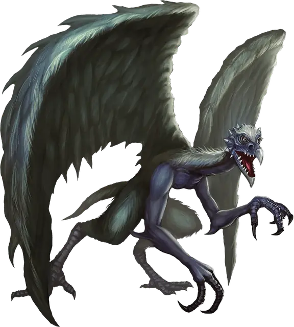

Врок
Vrock
Большое Исчадие (Демон), хаотично-злое

Класс Доспеха 15 (природный доспех)
Хиты 104 (11к10 + 44)
Скорость 40 футов, летая 60 футов
| мод | спас | ||
|---|---|---|---|
| СИЛ | 17 | +3 | +3 |
| ЛОВ | 15 | +2 | +5 |
| ТЕЛ | 18 | +4 | +4 |
| мод | спас | ||
|---|---|---|---|
| ИНТ | 8 | −1 | −1 |
| МДР | 13 | +1 | +4 |
| ХАР | 8 | −1 | +2 |
Сопротивление урону огонь, холод, электричество; дробящий, колющий, рубящий от немагических атак
Иммунитет к урону яд
Иммунитет к состояниям отравление
Чувства тёмное зрение 120 футов, пассивное Восприятие 11
Языки Бездны, Телепатия 120 фт.
Опасность 6 (2300 опыта)
Бонус мастерства +3
Особенности
Сопротивление магии. Врок совершает с преимуществом спасброски от заклинаний и прочих магических эффектов.
Вариант: призыв демона. У некоторых демонов может быть действие, позволяющее им призывать других демонов.
Призыв демона (1/день). Демон выбирает, кого призвать, и пытается это сделать. Врок получает 30% шанс призыва 2к4 дретчей [dretch] или одного врока [vrock].
Призванный демон появляется в свободном пространстве в пределах 60 футов от призывателя, и действует как его союзник, не имеющий способности призывать демонов. Он призывается на 1 минуту или пока призыватель не умрёт или действием его не отпустит.
Действия
Мультиатака. Врок совершает две атаки: одну клювом, и одну когтями.
Клюв. Рукопашная атака оружием: +6 к попаданию, досягаемость 5 футов, одна цель. Попадание: Колющий урон 10 (2к6 + 3).
Когти. Рукопашная атака оружием: +6 к попаданию, досягаемость 5 футов, одна цель. Попадание: Рубящий урон 14 (2к10 + 3).
Споры (перезарядка 6). Из врока исходит облако токсичных спор с радиусом 15 футов. Споры огибают углы. Все существа в этой области должны преуспеть в спасброске Телосложения Сл 14, иначе станут отравленными. Будучи отравленной таким образом, цель получает урон ядом 5 (1к10) в начале каждого своего хода. Цель может повторять этот спасбросок в конце каждого своего хода, оканчивая эффект на себе при успехе. Если на цель вылить флакон святой воды, эффект на ней тоже закончится.
Ошеломляющий вопль (1/день). Врок испускает жуткий вопль. Все существа в пределах 20 футов от него, слышащие его, и не являющиеся демонами, должны преуспеть в спасброске Телосложения Сл 14, иначе станут ошеломлёнными до конца следующего хода врока.
Описание
Вроки — тупые, капризные исчадия, живущие только ради боли и резни. Врок напоминает гигантскую помесь гуманоида и стервятника, он скрючен, его чудовищное тело и огромные крылья воняют падалью.
Вроки пожирают плоть гуманоидов каждый раз, как только представляется такая возможность, ошеломляя потенциальную добычу оглушительным визгом, а затем бросаются вниз, чтобы атаковать клювом и когтями. Вроки могут взмахивать крыльями, выпуская в воздух облака токсичных спор.
Красивые вещи заставляют вроков драться друг с другом за обладание дешёвыми украшениями и поделочными камнями. Однако, не смотря на любовь к сокровищам, вроков трудно подкупить. Они не видят смысла с кем-либо торговаться, если можно забрать то, что хочется, с трупа торгующегося.
См. дополнительно статью: "Бестиарий: Демоны"